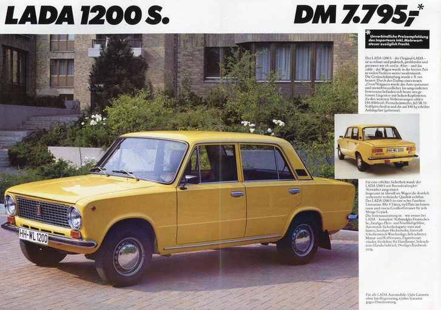

Zsanett évek óta vágyott egy Zsigulira. Megszerezte. Újraépítette. Most pedig imádja.
„Nincs profilképem, elcseréltem egy felújított Ladára” ez olvasható Szabó Zsanett Facebook-profilján. Aki nem hiszi, görgesse lejjebb, s meglátja, hogy amíg mások életük színpompás kirakat pillanataiból osztják meg a csúcsszupereket, ő zsigulis felvételekkel dobja fel profilját. A képek nagyrészén a Szonyecska névre keresztelt sárga színű 2101-es történetét látjuk, attól a pillanattól kezdve, hogy megszerezte, majd felépítette, s mostanában pedig használja. Imádja ez a felületes szemlélőnek is lejön, viszonylag gyorsan.
Nem megyek bele részletesen a típus történetébe sokan megtették ezt már, akit érdekel, tuti talál ilyet a neten .csupán szeretném elhelyezni a Lada/Zsiguli számegyenesen Szonyecskát. Az 1980-as kocsi egy „sima” 2101-es, pontosabban VAZ2101-es, amely négyajtós szedánt 1970 és 1982 között gyártották, 1,2 literes motorral szerelték.
Ezek a jobbkormányosok (számomra) mindig érdekesek, az Egyesült Királyságban például az első eladott jobbkormányos Moszkvics az egy 408-as volt, ami egy 1964-es autós bemutatón, az Earls Court Motor Show-n jelent meg. Ez az az időszak, amikor nemhogy lengén öltözött, hanem a kocsikon egyenesen meztelenül pózoló modellekkel szándékoztak bemutatni és eladni az újdonságokat. A hatvanas évek végén a nagyságrendileg húsz kereskedő még csak pár száz autót adott el Moszkvicsból a Lada ekkor még nem is létezett.
Az ugye az autóipar történelmében otthonosan mozgó többség számára is ismert, hogy a Fiat szerette fűnek-fának eladogatni a liszenszeit talán a legtöbb bőrt az 1967-es Év autójának választott Fiat 124-esről húztak le. Ha csak az itthon jobban ismert, és idevágó Fiat klónokról beszélünk, akkor a Polski Fiat 125p és a Lada 2101-es jut az emberek eszébe. A tisztánlátás végett szedtem össze, hogy liszensz szerződést az olaszok a lengyelekkel 1965. december 22-én írtak alá, az oroszokkal pedig 1966. augusztus 14-én. S amíg az első, a Fiat 125-ös karosszériájába épített Fiat 1300/1500 technikájú Polski Fiat 125p 1967 végére elkészült ekkor Togliattiban még az utakat aszfaltozták, a gyár falai pedig még nem álltak a Zsiguli hegy mellett építendő autóvárosban. Az olasz konstrukción az oroszok alapvetően erősítettek, a lengyelek talán inkább egyszerűsítettek: a Polskinak kisebb lett a díszítettsége.
A szintén 124-es alapú deriváltat 1968-ban mutatták be a barcelonai autószalonon, a neve minő meglepetés Seat 124 lett. Egy szép állapotú világoskék színű ilyenről tudok itthon, ha valaki ismer még, jelentkezzen, mert érdekes ez is! Az első Fiat 124 liszenszű Lada 1200-es végül 1970-ben gördült le a futószalagról.